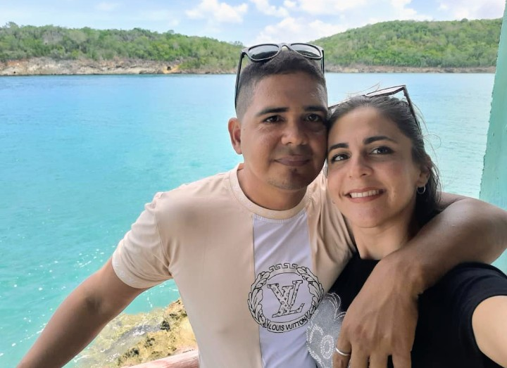

Tito, con su inteligencia y su pasión por manejar.
Yeli, con su sazón y su pasión por Italia.
Yisel Sofía y Diego llenando la casa de ruido y de ternura,
creciendo entre risas y abrazos.
Max moviendo su colita.
Los colores morado y verde pintando cada rincón, haciendo historia.